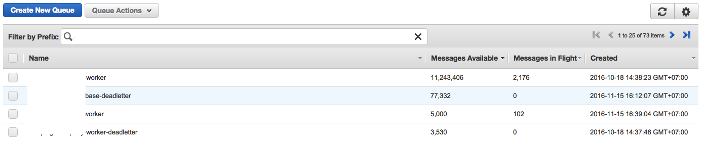

Fajri Abdillah
fajri@serverless.id
Every business required a system that can satisfied the customer
Happy customer == More money
1. Higher investment in Hardware
2. Too much server is costly
3. Too few server is making Our Customer unhappy
4. Higher Total Cost Of Ownership (TCO)
1. More time for capacity planning
2. Harder to keep up with Customer Data
(Harder to Scale)
3. More "Server" team
4. Slower in delivering software
1. No investment in Hardware
(Pay as you go, pay per use)
2. Too much server is less costly
(Add more server when needed)
3. No more too few server
(Autoscaling to the rescue)
4. Lower Total Cost Of Ownership (TCO Calculator)
1. Less time for capacity planning
2. Easier to keep up with Customer Data
(Easier to scale)
3. Less "Server" team
4. Faster in delivering software
2 Billion rows stored in RDS
From 24 EC2 instances to 1000 EC2 instances
From 300GB of Photos to 50TB of Photos in S3
5 person operations team
Native architecture of the cloud that enables you to focus on business not infrastructure
Build and run applications and services without thinking about servers
No need to thinking about : server provisioning, patching, maintenance and capacity provisioning
Build modern applications with increased agility and lower TCO
Built-in high availability and fault tolerance, security is included
Developers can focus on code not infrastructure, more vacation time
Cost $9,000,000 with $400,000 on load testing alone
Load tested at a 150% of expected usage levels
"It crashed pretty much straight away" - Austin Wilshire
Cost $500 and under 24 hours of total work
Built by 2 University student that totally new to AWS
Tested with goad.io to achieve up to 100k requests per second
"cool: QUT Students built an Australian Census system for $500 that does not #CensusFail"
Werner Vogels [1] [2]
11 million messages in SQS
How big is 10 million messages?
100 KB * 10 = 1,000 KB = 1 MB
100 KB * 100 = 10,000 KB = 10 MB
100 KB * 1,000 = 100,000 KB = 100 MB
100 KB * 10,000 = 1,000,000 KB = 1,000 MB = 1 GB
100 KB * 100,000 = 10,000,000 KB = 10,000 MB = 10 GB
100 KB * 1,000,000 = 100,000,000 KB
= 100,000 MB = 100 GB
100 KB * 10,000,000 = 1,000,000,000 KB
= 1,000,000 MB = 1,000 GB
= 1 TB
Messages in Flight
Processing ~2000 Messages / second
100 KB * 2,000 = 200,000 KB = 200 MB / second